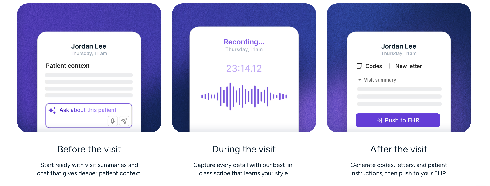
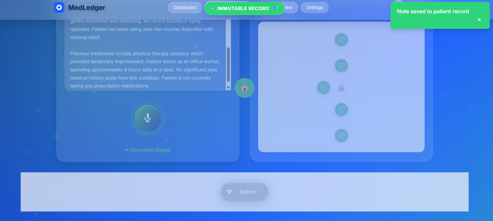
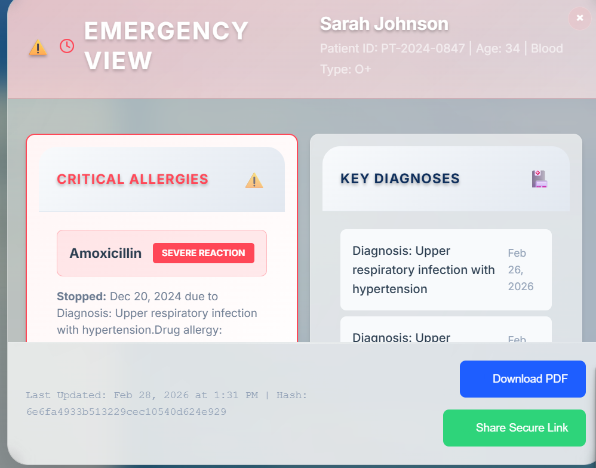

Documentation without burnout. Accountability without bureaucracy.
Intern doctors spend more time tracing fragmented records than delivering care. Burnout has become systemic.
Our localized AI seamlessly reads between the lines, mapping complex connections without compromising patient privacy.
Detecting anomalies before they escalate. We surface critical, defensible insights exactly when decisions are being made.
Every sentence is traceable. Every decision is defensible. Local-first design with hash-locked clinical records.



We are building accountability that lives at the edge —
reducing burnout while restoring the deeply human connection in modern medicine.